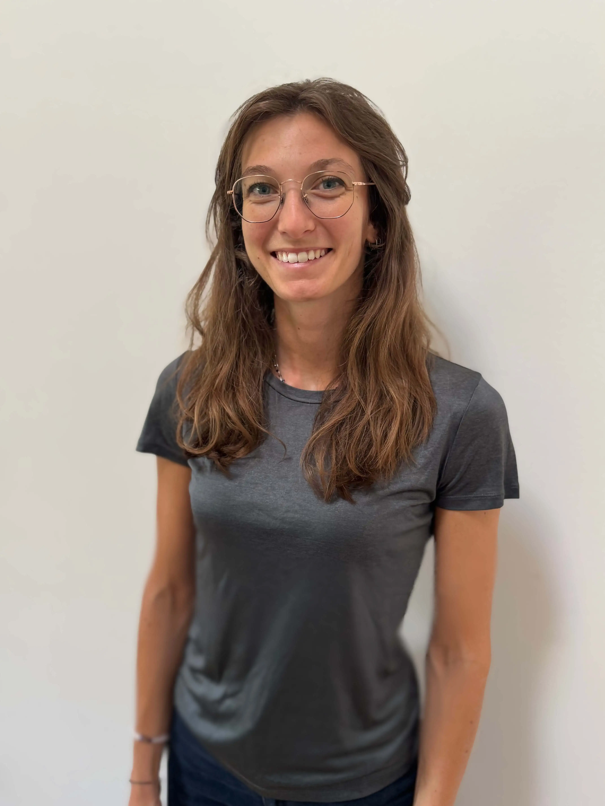

Chi sono

Passione e Competenze
Benvenuti! Sono Veronica Tresoldi, una professionista dedicata allo sviluppo e al benessere dei più piccoli. Il mio lavoro nasce dal desiderio di offrire ad ogni bambino lo spazio e gli strumenti necessari per crescere in modo armonioso e sereno.
Credo profondamente nel potere del gioco come linguaggio universale dell'infanzia e come porta d'accesso privilegiata per la terapia e l'apprendimento. Il mio approccio mette al centro non solo il bambino, ma l'intero nucleo familiare.
Il mio profilo professionale si fonda su solide competenze in Valutazione Neuropsicomotoria, per delineare il profilo funzionale globale del bambino, e in Riabilitazione dei disturbi del neurosviluppo. Curo con rigore la Progettazione dell'intervento, lavorando in sinergia con la scuola per garantire la migliore integrazione.
Oltre alla pratica clinica, mi dedico con entusiasmo al Parent Coaching, aiutando i genitori a riscoprire le proprie risorse e a navigare con fiducia nelle sfide educative quotidiane.
Il mio approccio
Empatia
Ascolto profondo dei bisogni del bambino e accoglienza senza giudizio delle fatiche dei genitori.
Personalizzazione
Ogni percorso è unico, costruito su misura sulle caratteristiche specifiche di ogni famiglia.
Gioco
Il gioco non è solo divertimento, ma lo strumento elettivo per lo sviluppo motorio e cognitivo.
Scientificità
Un metodo basato su solide basi teoriche e un aggiornamento continuo sulle ultime evidenze cliniche.
Formazione ed Esperienza
Terapista della Neuro e Psicomotricità dell'Età Evolutiva
Collaborazioni presso ASST e Centri di Riabilitazione in Lombardia
Master in Parent & Teen Coaching
YWC Academy
Master in Autismo e Disturbi dello Sviluppo
Università degli Studi di Modena e Reggio Emilia
Laurea Magistrale in Scienze Riabilitative
Università Vita-Salute San Raffaele Milano
Laurea in Terapia della Neuro e Psicomotricità
Università degli Studi di Milano – Bicocca
Costruiamo insieme il futuro di tuo figlio
Sono qui per accompagnarvi, passo dopo passo, verso una crescita più serena e consapevole.
Entra in contatto